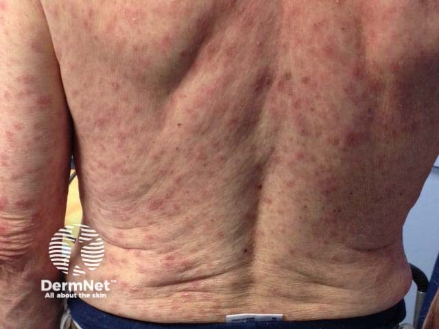

Тема 1
Строение кожи. Первичные и вторичные морфологические элементы. Функции кожи. Принципы диагностики и лечения кожных заболеваний. Пиодермия
Строение и функции кожи, морфологические элементы, диагностика и лечение кожных заболеваний.
Разобранные темы по нескольким учебникам сразу.
Строение и функции кожи, морфологические элементы, диагностика и лечение кожных заболеваний.

Грибковые заболевания кожи: эпидермомикозы, кандидозы и трихомикозы; паразитарные болезни кожи.

Дерматиты, токсикодермия и экзема. Атопический дерматит. Ихтиоз, врождённый буллёзный эпидермолиз.

Псориаз, красный плоский лишай. Нейродерматозы.


Коллагенозы: эритематоз, склеродермия. Инфекционные эритемы. Туберкулез кожи. Лепра. Лейшманиоз.

Тема 7. Методика обследования больного венерическими заболеваниями. Заболевания, передающиеся половым путём. Сифилис, общая часть. Первичный период сифилиса. ВИЧ-инфекция (дерматологические аспекты).

Тема 8. Вторичный и третичный период сифилиса, врожденный сифилис. Лечение и профилактика сифилиса.

Тема 9. Гонорея, негонококковые уретриты у мужчин. Лечение и профилактика.
Вопросы к каждой теме: с выбором ответа и открытые.
Пока пусто.
Список вопросов к экзамену по предмету.
Пока пусто.
Учебники и книги по предмету.